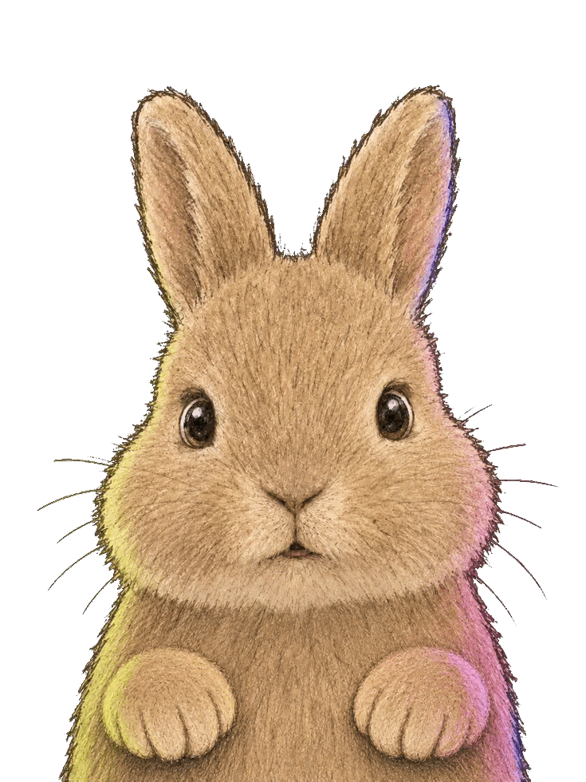
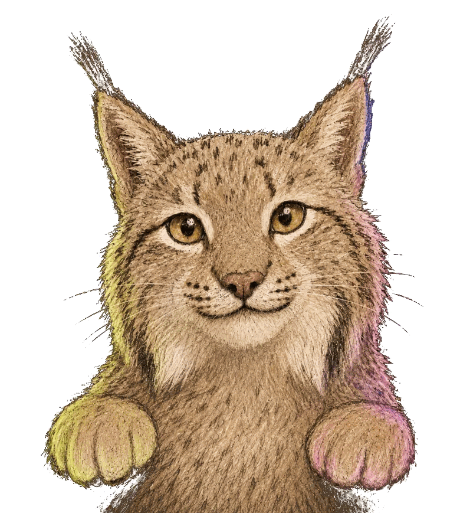

01
Modeling
- + Product
- + Character
- + Other 3D Asset
View
> FEATURE AXIS A: INVERSION DYNAMICS
> FEATURE AXIS B: BINOCULAR PERSPECTIVE CREATIVE DIRECTION
Design should evoke atmosphere before explanation. We create refined digital and visual experiences that speak through proportion, typography, motion, and silence — allowing brands to express themselves with authenticity and depth.
Our approach combines creative direction with minimal sophistication, transforming abstract ideas into immersive visual experiences. The outcome is design that feels calm, distinctive, and quietly powerful.

